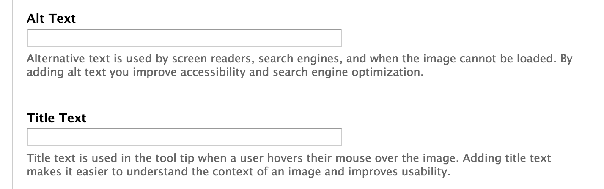

Alternative Text for Images
Why do we care?
- Accessibility =
- more users can understand your content
- search engines can parse your content
- everyone has a better experience
Also it's legally required.
Alternative text for images on the web
alt attribute:
<img src="/sites/default/files/image.png" alt="Sign that reads Do not read this sign">In Your Editor
But what do I write?
Think about the content and function of your image.
- Is the image decorative or informative?
- Is there text in the image?
- Does the image link somewhere?
Decorative or informative?
Decorative:
pretty! conveys no information! Use empty alt text.
Informative:
- Picture: provide a name or a short description
- Text: reproduce the text word for word
- Data: provide an overview
- Functional: emphasize action
Example 1
Because of his role as the Commander in Chief of American forces in the Revolutionary War, and, later, the first President of the United States, George Washington is often called the "Father of his Country".
What would be appropriate alternative text for this image?
- "Image of George Washington"
- "George Washington, the first president of the United States"
- An empty alt tag is fine.
- "George Washington"
Example 2
Because of his role as the Commander in Chief of American forces in the Revolutionary War, and, later, the first President of the United States, George Washington is often called the "Father of his Country".
What would be appropriate alternative text for this image?
- "George Washington"
- An empty alt tag is fine.
- "Image"
- The image does not need an alt tag.
Example 3
Because of his role as the Commander in Chief of American forces in the Revolutionary War, and, later, the first President of the United States, George Washington is often called the "Father of his Country".
What would be appropriate alternative text for this image?
- An empty alt attribute (alt="") will suffice.
- "Wikipedia entry for George Washington"
- "Read More"
- "George Washington"
Example 4

In this painting, the artist Emanuel Leutze used light, color, form, perspective, proportion, and motion to create the composition.
What would be appropriate alternative text for this image?
- "George Washington"
- "Painting of George Washington"
- "Painting of George Washington crossing the Delaware River"
- "A painting demonstrating the use of light and color in composition."
- "Painting of George Washington crossing the Delaware River. Swirling waves surround the boat where George Washington looks forward out of the storm and into the rays of light across the river as he leads his wary troops to battle."
Conclusion
Alt text is easy to do and hard to do right. Do it anyway.
Do
- consider content and function of your image
- be concise
Don't
- repeat available information
- use the phrases 'image of' or 'graphic of'
References
- WebAIM, Center for Persons with Disabilities, Utah State University
- 18F Accessibility Guide
- Accessible Technology Team, University of Minnesota Duluth
Thank you

Elizabeth Yalkut
elizabeth.yalkut@columbia.edu